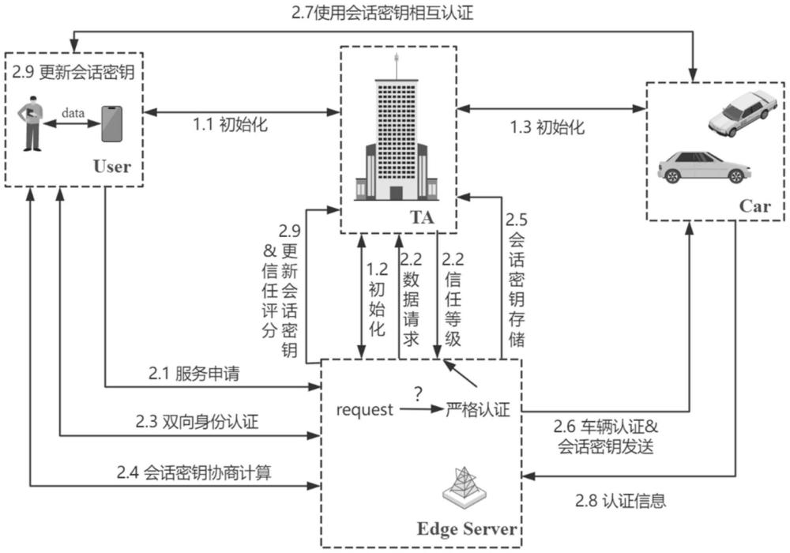
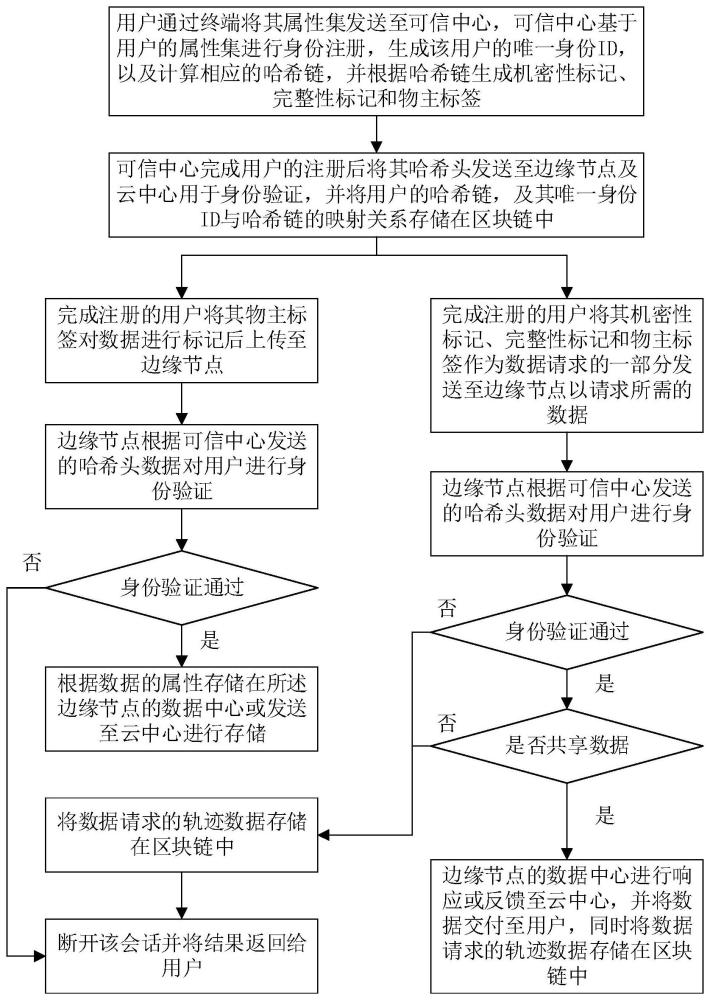
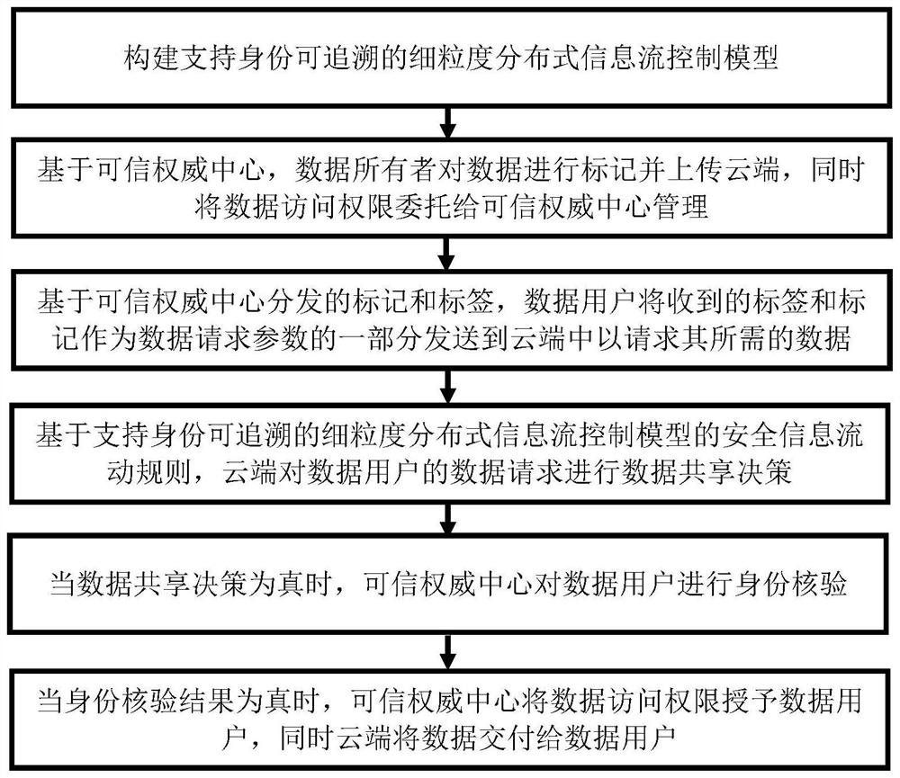
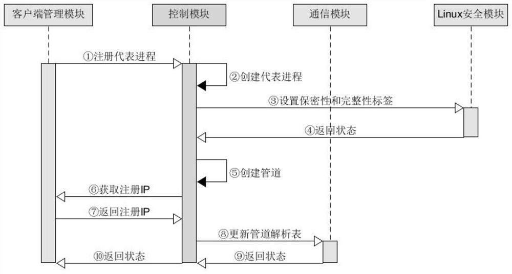
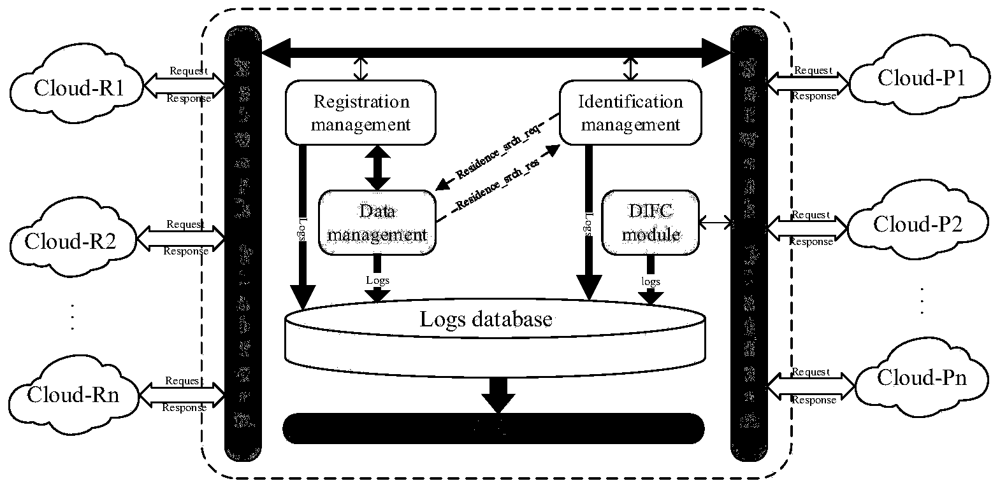
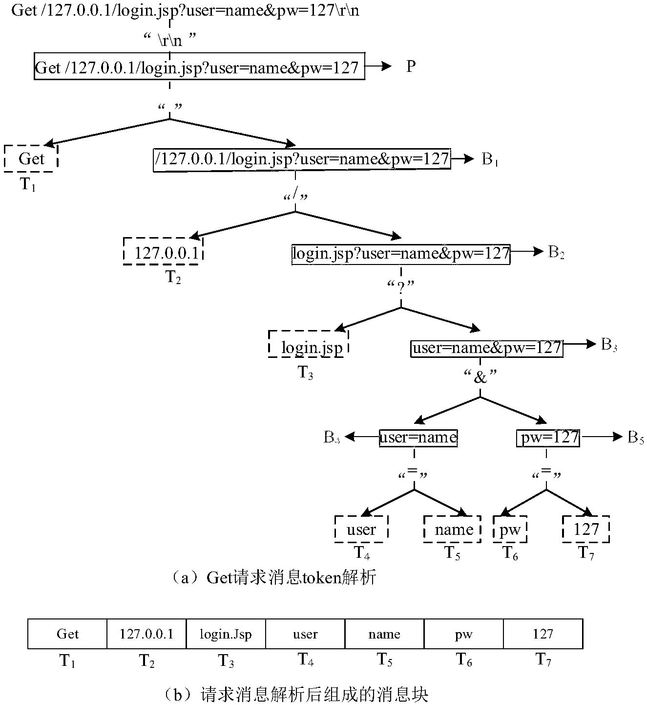
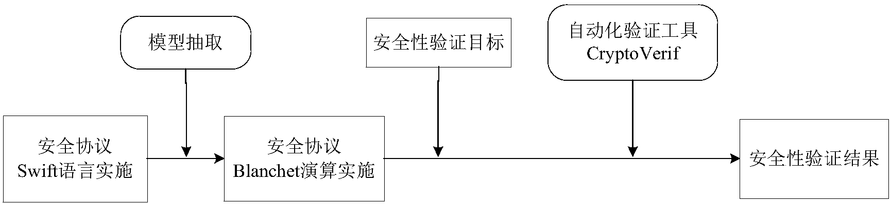

论文发表
2026
MQTT-L: a lightweight end-to-end secure protocol with renewable hash chains for IoT environments
Journal ArticleIn: Journal of King Saud University Computer and Information Sciences, vol. 38, article 539, 2026.
The Message Queuing Telemetry Transport (MQTT) protocol has become a de-facto standard for lightweight communication in the Internet of Things. However, the standard MQTT lacks built-in security mechanisms for authentication and end-to-end data protection. Existing research has enhanced MQTT security via TLS, reliance on trusted authorities, and lightweight cryptographic extensions, but these approaches suffer from significant computational overhead, heavy reliance on trusted Brokers, and poor scalability in resource-constrained environments. Accordingly, this paper proposes MQTT-L, a lightweight end-to-end secure protocol designed for resource-constrained devices. MQTT-L introduces salt-driven renewable one-way hash chains to achieve lightweight Client-to-Broker authentication and fast reconnection. Furthermore, a key agreement mechanism based on extended Chebyshev chaotic maps is designed to establish end-to-end session keys, and the ChaCha20-Poly1305 cipher is integrated into MQTT-L to ensure the confidentiality and integrity of end-to-end messages. To verify the security and authentication properties of MQTT-L, we utilize the well-known ProVerif tool for formal security verification and further prove its security informally. Finally, performance evaluations, including theoretical analysis, and experimental evaluations conducted on a Mosquitto MQTT Broker testbed, demonstrate the superiority of MQTT-L over existing schemes and TLS-MQTT.
@article{Yu2026MQTTL,
author = {Yu, Chengzhi and Qi, Menglong and Luo, Han and Tian, Jie and Lu, Jintian},
title = {{MQTT-L}: A Lightweight End-to-End Secure Protocol with Renewable Hash Chains for {IoT} Environments},
journal = {Journal of King Saud University Computer and Information Sciences},
year = {2026},
volume = {38},
number = {6},
pages = {539},
date = {2026-06-25},
issn = {2213-1248},
doi = {10.1007/s44443-026-00972-4},
url = {https://doi.org/10.1007/s44443-026-00972-4}
}Game-theory based anonymous secure mutual authentication protocol with privacy-preserving for multi-level users in driverless taxi services
Journal ArticleIn: Journal of King Saud University Computer and Information Sciences, vol. 38, article 394, 2026.
In the field of Internet of Vehicles, driverless taxi (DT) services require secure and low-latency interactions among users, edge servers, DTs, and a trusted authority (TA). Nevertheless, existing vehicular authentication schemes are mainly designed for V2V, V2I, or multi-server environments and fail to account for variations in user behavior, interaction frequency, and risk level, thereby reducing service efficiency. To address these challenges, this paper proposes a game-theory based trust-adaptive Anonymous Secure Mutual Authentication (ASMA) protocol for multi-level users in DT services. ASMA integrates extended Chebyshev chaotic map operations into the authentication process to realize anonymous mutual authentication and session key negotiation. In addition, a dynamic trust evaluation mechanism is introduced to update user trust scores according to historical behaviors and current authentication outcomes, so that users are classified into premium, normal, and risky levels and are assigned differentiated authentication processes. In this way, premium users can complete authentication with lower latency, while risky users are required to undergo stricter verification. Security analysis in the Real-or-Random model and Scyther tool demonstrate that ASMA achieves its intended security goals. Performance evaluation on the NS-3 platform shows that ASMA provides favorable computational latency, communication overhead, and energy consumption compared with related schemes. A Nash equilibrium analysis experiment was conducted on the proposed hybrid game model, proving that the differentiated authentication strategy is an endogenous result under long-term incentives. At the same time, a dynamic convergence simulation of trust scores verifies that the evaluation mechanism can make the trust score converge stably to a reasonable range.
@article{Qi2026GameTheory,
author = {Qi, Menglong and Yu, Chengzhi and Tian, Jie and Luo, Han and Xie, Mangang and Wu, Jun and Lu, Jintian},
title = {Game-Theory Based Anonymous Secure Mutual Authentication Protocol with Privacy-Preserving for Multi-Level Users in Driverless Taxi Services},
journal = {Journal of King Saud University Computer and Information Sciences},
year = {2026},
volume = {38},
number = {6},
pages = {394},
date = {2026-05-07},
issn = {2213-1248},
doi = {10.1007/s44443-026-00818-z},
url = {https://doi.org/10.1007/s44443-026-00818-z}
}A traceable and attribute–updatable data sharing scheme with privacy preserving based on attribute tree for cloud–assisted VANETs
Journal ArticleIn: Journal of King Saud University Computer and Information Sciences, vol. 38, article 368, 2026.
Cloud-assisted Vehicular Ad Hoc Networks (VANETs) facilitate efficient data sharing by leveraging cloud for storing critical traffic information. However, ensuring secure, privacy preserving, and accountable data access with dynamic attribute updates in such environments remains challenging. Therefore, this paper proposes a Traceable and Attribute-Updatable Data Sharing Scheme (TAUDS) with privacy preserving based on attribute tree for cloud-assisted VANETs. Firstly, we construct an attribute tree that enables a two stage black-box tracing mechanism. It first performs an attribute-based binary search to narrow the suspect user set, then conducts identity-based binary localization to precisely identify malicious users, which reduces tracing overhead. We design an attribute update mechanism via dynamic leaf node adjustments on the attribute tree. It supports efficient revocation and modification without reissuing the whole system. For privacy protection, TAUDS employs symmetric encryption to keep user identities confidential, and uses a linear secret sharing scheme to achieve policy hiding. Secondly, under the Decisional Bilinear Diffie-Hellman assumption, formal security analysis proves that TAUDS achieves indistinguishability under chosen-plaintext attack, while its collusion resistance is verified informally. Finally, performance evaluations show clear improvements in computational cost and energy consumption, which confirms that TAUDS is suitable for resource-constrained vehicular environments.
@article{Luo2026Traceable,
author = {Luo, Han and Liu, Chang and Qi, Menglong and Yu, Chengzhi and Lu, Jintian},
title = {A Traceable and Attribute-Updatable Data Sharing Scheme with Privacy Preserving Based on Attribute Tree for Cloud-Assisted {VANETs}},
journal = {Journal of King Saud University Computer and Information Sciences},
year = {2026},
volume = {38},
number = {6},
pages = {368},
date = {2026-04-29},
issn = {2213-1248},
doi = {10.1007/s44443-026-00769-5},
url = {https://doi.org/10.1007/s44443-026-00769-5}
}2025
Construction of Personalized Music Theory Teaching Model in Colleges and Universities: Machine Learning Perspective
Proceedings ArticleIn: 2025 International Conference on Algorithms, Data Mining, and Information Technology (ADMIT), pp. 1–6, 2025.
In colleges and universities, music theory courses often adopt uniform teaching methods that fail to consider students' varying backgrounds, skill levels, and learning interests. This study proposes a personalized music theory teaching model from a machine learning. Using datasets of 400 students from Jisou University, the model first applied logistic regression to predict students' mastery of music theory with a precision of 0.89. Subsequently, K-means clustering (K=3) identified three optimal learning profiles-Achiever, Explorer, and Expressive-that guided differentiated teaching strategies. Furthermore, model employed the Analytic Hierarchy Process (AHP) to evaluate the teaching outcomes from multiple dimensions. Experimental results demonstrate that, compared with the traditional teaching model, the personalized teaching model increased teaching evaluation scores by 25% and 27% for freshmen and sophomores, respectively. Average test scores also improved by 4.4 and 6 points. These findings demonstrate that the model not only enhances the effectiveness of music theory teaching but also provides a replicable framework for integrating machine learning into college-level music education.
@inproceedings{Tao2025Construction,
author = {Tao, Yongcheng and Li, Zinan and Yu, Chengzhi},
booktitle = {2025 International Conference on Algorithms, Data Mining, and Information Technology (ADMIT)},
title = {Construction of Personalized Music Theory Teaching Model in Colleges and Universities: Machine Learning Perspective},
year = {2025},
volume = {},
number = {},
pages = {1--6},
doi = {10.1109/ADMIT67050.2025.11336992}
}A Symmetrically Verifiable Outsourced Decryption Data Sharing Scheme with Privacy-Preserving for VANETs
Journal ArticleIn: Symmetry, vol. 17, no. 12, article 2032, 2025.
Frequent data sharing in Vehicular Ad Hoc Networks (VANETs) necessitates a robust foundation of secure access control to ensure data security. Existing ciphertext-policy attribute-based encryption schemes are constrained by the performance bottleneck of a single attribute authority. Furthermore, although many schemes adopt outsourced decryption, the verifiability of the decryption results is not guaranteed. Therefore, this paper proposes a Symmetrically Verifiable Outsourced Decryption Data Sharing Scheme with Privacy-Preserving for VANETs (VODDS). To balance the computational overhead across multiple authorities, VODDS introduces a distributed key distribution mechanism that organizes them into groups. Within each group, the key distribution credential is generated through a Group Key Agreement, with each round secured by a Byzantine consensus mechanism to achieve a balance between security and efficiency. User identities are converted into anonymous representations via hashing for embedding into the attribute keys. Furthermore, blockchain technology is used to record a hash commitment for the verification ciphertext. This enables the user to verify the outsourced result through a smart contract, which performs a symmetrical verification by matching the user’s locally computed hash against the on-chain record. Moreover, VODDS employs a linear secret sharing scheme to achieve policy hiding. We provide security analysis under the q-parallel Bilinear Diffie–Hellman Exponent and Decisional Diffie–Hellman assumptions, which proves the security of VODDS. In addition, VODDS exhibits higher efficiency compared to related schemes in the performance evaluation.
@article{Luo2025Symmetrically,
author = {Luo, Han and Qi, Menglong and Yu, Chengzhi and Liu, Qianxi and Lu, Jintian},
title = {A Symmetrically Verifiable Outsourced Decryption Data Sharing Scheme with Privacy-Preserving for VANETs},
journal = {Symmetry},
volume = {17},
year = {2025},
number = {12},
article-number = {2032},
url = {https://www.mdpi.com/2073-8994/17/12/2032},
issn = {2073-8994},
doi = {10.3390/sym17122032}
}A Symmetry-Enhanced Secure and Traceable Data Sharing Model Based on Decentralized Information Flow Control for the End–Edge–Cloud Paradigm
Journal ArticleIn: Symmetry, vol. 17, no. 10, article 1771, 2025.
The End–Edge–Cloud (EEC) paradigm hierarchically orchestrates Internet of Things (IoT) devices, edge nodes, and cloud, optimizing system performance for both delay-sensitive data and compute-intensive processing tasks. Securing IoT data sharing in the EEC-driven paradigm while maintaining data traceability poses critical challenges. In this paper we propose STDSM, a symmetry-enhanced secure and traceable data sharing model for the EEC-driven data sharing paradigm. STDSM enables IoT data owners to share data securely by attaching symmetric security labels (for secrecy and integrity) to their data. This mechanism symmetrically controls both data outflow and inflow. Furthermore, STDSM can also track data user identity. Subsequently, the security properties of STDSM, including data confidentiality, integrity, and identity traceability, are formally verified; the verification takes 280 ms, using a novel approach that combines High-Level Petri Net modeling with the satisfiability modulo theories library and the Z3 solver. In addition, our experimental results show that STDSM reduces time overhead by up to 15% while providing enhanced traceability.
@article{Lu2025SymmetryEnhanced,
author = {Lu, Jintian and Yu, Chengzhi and Qi, Menglong and Luo, Han and Tian, Jie and Li, Jianfeng},
title = {A Symmetry-Enhanced Secure and Traceable Data Sharing Model Based on Decentralized Information Flow Control for the End–Edge–Cloud Paradigm},
journal = {Symmetry},
volume = {17},
year = {2025},
number = {10},
article-number = {1771},
url = {https://www.mdpi.com/2073-8994/17/10/1771},
issn = {2073-8994},
doi = {10.3390/sym17101771}
}2024
RCFG2Vec: Considering Long-Distance Dependency for Binary Code Similarity Detection
Proceedings ArticleIn: 39th IEEE/ACM International Conference on Automated Software Engineering (ASE 2024), pp. 770–782, 2024.
Binary code similarity detection(BCSD), as a fundamental technique in software security, has various applications, including malware family detection, known vulnerability detection and code plagiarism detection. Recent deep learning-based BCSD approaches have demonstrated promising performance. However, they face two significant challenges that limit detection performance. First, most approaches that use sequence networks (like RNN and Transformer) utilize coarse-grained tokenization methods, which results in large vocabulary size and severe out-of-vocabulary (OOV) problem. Second, CFG-based methods typically use variants of graph convolutional networks, which only consider local structural information and discard long-distance dependencies between basic blocks.
To address these challenges, this paper proposes Syntax Tree-based instruction embedding and introduces the acyclic graph neural network. The former decomposes assembly instructions into fine-grained tokens and employs a tree-structured neural network to generate vector representations for instructions. The latter transforms CFGs into directed acyclic graphs based on their reducibility, and further captures the dependency between basic blocks with a directed acyclic graph neural network. We implemented these two techniques in a prototype named RCFG2Vec and conducted comprehensive evaluation on two public datasets. The experiment results demonstrate that RCFG2Vec outperforms almost all baselines and achieves detection performance comparable with jTrans, a large model-based approach. Meanwhile, when integrated with our proposed techniques, several baseline approaches exhibit significant improvements in detection performance.
@inproceedings{Li2024RCFG2Vec,
author = {Li, Weilong and Lu, Jintian and Xiao, Ruizhi and Shao, Pengfei and Jin, Shuyuan},
title = {RCFG2Vec: Considering Long-Distance Dependency for Binary Code Similarity Detection},
year = {2024},
isbn = {9798400712487},
publisher = {Association for Computing Machinery},
address = {New York, NY, USA},
url = {https://doi.org/10.1145/3691620.3695070},
doi = {10.1145/3691620.3695070},
booktitle = {Proceedings of the 39th IEEE/ACM International Conference on Automated Software Engineering},
pages = {770--782},
numpages = {13},
location = {Sacramento, CA, USA},
series = {ASE '24}
}Simultaneous update of sensing and control data using free-ride codes in vehicular networks: An age and energy perspective
Journal ArticleIn: Computer Networks, vol. 252, article 110667, 2024.
In real-time Internet of Things networks, age of information (AoI) and energy cost (EC) are generally deemed as two significant performance metrics to characterize the information freshness and energy efficiency. This paper aims at updating not just sensing data but sensing data and control data simultaneously in vehicular networks. By employing the promising free-ride coding mechanism, the randomly encoded control data is superposed on the low-density parity-check coded sensing data and then is sent to the receiver, consuming neither additional bandwidth nor transmission power. Considering the time and energy of both status update generation and transmission, the average AoI (AAoI) and average EC (AEC) expressions are derived for preemptive and blocking updating schemes with truncated automatic repeat request protocol. Numerical simulations present the AAoI of both sensing data and control data, as well as the AEC of the transmitter, which demonstrate that free-ride coding mechanism not only can improve the freshness of control data but impose an insignificant influence on the performance of sensing data. Moreover, comparison with the blocking scheme suggests that the preemptive one obtains the smaller AAoI but the larger AEC.
@article{Xie2024Simultaneous,
title = {Simultaneous update of sensing and control data using free-ride codes in vehicular networks: An age and energy perspective},
journal = {Computer Networks},
volume = {252},
pages = {110667},
year = {2024},
issn = {1389-1286},
doi = {https://doi.org/10.1016/j.comnet.2024.110667},
url = {https://www.sciencedirect.com/science/article/pii/S1389128624004997},
author = {Mangang Xie and Baozhen An and Xiangdong Jia and Meng Zhou and Jintian Lu}
}ContexLog: Non-Parsing Log Anomaly Detection With All Information Preservation and Enhanced Contextual Representation
Journal ArticleIn: IEEE Transactions on Network and Service Management, vol. 21, no. 4, pp. 4750–4762, 2024.
Logs are widely used in software to trace the runtime states and critical events. Log-based anomaly detection is crucial for software maintenance and reliability assurance. Existing log-based anomaly detection methods are suffering from imperfections of log parsing, the neglect of the log individual context, and the discarding of non-character tokens. In this paper, we propose ContexLog, a non-parsing log-based anomaly detection method with all information preservation and enhanced log contextual representation, to detect diverse anomalies effectively. Log messages are first grouped as sequences with different windowing techniques. To capture all log features, ContexLog tokenizes each log sequence and preserves all information, including character and non-character tokens. It then represents the log sequential context and individual context simultaneously to construct input for a Transformer encoder-based classification model. Experimental evaluations on real-world datasets and synthetic datasets demonstrate ContexLog outperforms existing methods in achieving accurate anomaly detection results, handling unseen logs to avoid log parsing imperfections, and utilizing non-character tokens to detect diverse anomalies.
@article{Xiao2024ContexLog,
author = {Xiao, Ruizhi and Li, Weilong and Lu, Jintian and Jin, Shuyuan},
journal = {IEEE Transactions on Network and Service Management},
title = {ContexLog: Non-Parsing Log Anomaly Detection With All Information Preservation and Enhanced Contextual Representation},
year = {2024},
volume = {21},
number = {4},
pages = {4750--4762},
doi = {10.1109/TNSM.2024.3400283}
}In: IEEE Internet of Things Journal, vol. 11, no. 4, pp. 6521–6536, 2024.
Cloud-assisted Internet of Things (IoT) has become an increasingly popular paradigm to greatly improve the performance of IoT applications by delegating the cloud to manage the massive IoT data. How to achieve secure and real-time traceable data sharing (STDS) is crucial in this paradigm, especially, a large amount of sensitive data produced by IoT devices needs to be stored or accessed to/from the clouds. This article proposes an STDS scheme, which leverages the acrlong DIFC model to allow data owners to not only securely and efficiently share their data produced by IoT devices with data users but also have the capability of tracking the data users’ identity with nonrepudiation based on the hash chain technique. Subsequently, the acrlong HLPN, acrlong SMT-Lib, and Z3 solver are used to formally analyze and verify STDS based on acrlong BMC technique to prove the correctness and security STDS. The formal analysis results show that STDS fulfills its intended security goals. Finally, the performance evaluation results have demonstrated the efficiency of STDS.
@article{Lu2024Secure,
author = {Lu, Jintian and Li, Weilong and Sun, Jiakun and Xiao, Ruizhi and Liao, Bolin},
journal = {IEEE Internet of Things Journal},
title = {Secure and Real-Time Traceable Data Sharing in Cloud-Assisted IoT},
year = {2024},
volume = {11},
number = {4},
pages = {6521--6536},
doi = {10.1109/JIOT.2023.3314764}
}2023
In: IEEE Transactions on Network and Service Management, vol. 20, no. 3, pp. 2529–2543, 2023.
Large-scale services are generating massive logs, which trace the runtime states and critical events. Anomaly detection via logs is critical for service maintenance and reliability assurance. Existing log-based anomaly detection methods make use of the limited information in log data, resulting in their incapability of detecting diverse anomalies related to unused log features. In this paper, we propose AllInfoLog, a robust log-based anomaly detection method taking advantage of all log information, to detect diverse types of anomalies. To capture all log features, AllInfoLog utilizes four encoders to extract semantic, parameter, time, and other feature embeddings, respectively. The embeddings of all log features are then combined to train an attention-based Bi-LSTM model to detect diverse anomalies. The experimental evaluations on real-world log datasets, synthetic datasets, and unstable log datasets demonstrate AllInfoLog outperforms the state-of-the-art log-based anomaly detection methods from aspects of performance and robustness, and has effectiveness to detect diverse types of anomalies.
@article{Xiao2023AllInfoLog,
author = {Xiao, Ruizhi and Chen, Hao and Lu, Jintian and Li, Weilong and Jin, Shuyuan},
journal = {IEEE Transactions on Network and Service Management},
title = {AllInfoLog: Robust Diverse Anomalies Detection Based on All Log Features},
year = {2023},
volume = {20},
number = {3},
pages = {2529--2543},
doi = {10.1109/TNSM.2022.3224974}
}ASIFC: Auditable and Secure Information Flow Control for PaaS Cloud
Proceedings ArticleIn: 2023 International Conference on Mobile Internet, Cloud Computing and Information Security (MICCIS), pp. 102–106, 2023.
In the cloud, data security issues such as data leakage and maliciously access frequently occurs. Deploying strict security controls on the information flows in the cloud can effectively prevent such problems from happening. How to accurately control the information flows in the cloud and provide an intuitive way of auditing has become an indispensable need to enhance data security. This paper proposes an auditable and secure information flow control (ASIFC) module for PaaS cloud. By using decentralized information flow control model, ASIFC strictly controls the inter-process communication such as pipes, shared memory, and message queues, accurately and intuitively controlling the information flows in the cloud. Moreover, based on NetworkX, a log-driven visualization interface which can display flow direction of information in PaaS cloud is offered, providing understandable content for auditing. The performance evaluation results show that the module outperforms FlowK and Flume in micro-benchmark.
@inproceedings{Zhou2023ASIFC,
author = {Zhou, Minghao and Lu, Jintian and Jin, Shuyuan},
booktitle = {2023 International Conference on Mobile Internet, Cloud Computing and Information Security (MICCIS)},
title = {ASIFC: Auditable and Secure Information Flow Control for PaaS Cloud},
year = {2023},
volume = {},
issn = {},
pages = {102--106},
doi = {10.1109/MICCIS58901.2023.00022},
url = {https://doi.ieeecomputersociety.org/10.1109/MICCIS58901.2023.00022},
publisher = {IEEE Computer Society},
address = {Los Alamitos, CA, USA},
month = apr
}2022
DIFCS: A Secure Cloud Data Sharing Approach Based on Decentralized Information Flow Control
Journal ArticleIn: Computers & Security, vol. 117, article 102678, 2022.
In the field of cloud computing, collaboration and data sharing among clouds have dramatically increased. How to protect the security of shared cloud data is being an urgent problem. Based on decentralized information flow control (DIFC) model, this paper presents an approach, DIFC-based data sharing approach (DIFCS), to protect both confidentiality and integrity of shared cloud data. Additionally, this paper designs a privilege protection policy for DIFCS, resulting in its capability of preventing malicious users from modifying privilege. The correctness and security properties of DIFCS are proved by formal analysis and verification, where firstly, DIFCS is formally interpreted into high-level petri net (HLPN) representation and analyzed using Z language, then is automatically verified with SMT-Lib and Z3 solver. The formal analysis and verification results reveal that DIFCS holds the security properties of confidentiality, integrity, authenticity, and privilege tamper-proof. The experimental results further demonstrate the high efficiency of DIFCS.
@article{Lu2022DIFCS,
title = {DIFCS: A Secure Cloud Data Sharing Approach Based on Decentralized Information Flow Control},
journal = {Computers & Security},
volume = {117},
pages = {102678},
year = {2022},
issn = {0167-4048},
doi = {https://doi.org/10.1016/j.cose.2022.102678},
url = {https://www.sciencedirect.com/science/article/pii/S0167404822000761},
author = {Jintian Lu and Jiakun Sun and Ruizhi Xiao and Shuyuan Jin}
}Inter-cloud secure data sharing and its formal verification
Journal ArticleIn: Transactions on Emerging Telecommunications Technologies, vol. 33, no. 1, article e4380, 2022.
With the development of cloud computing, data sharing and collaboration have become increasing among cloud-oriented organizations. In addition to trivial management work, data providers face many difficulties in managing access control policies in cloud data sharing, to prevent permission abuse and information leakage. This article mainly answers the following question: is it possible to achieve verifiably secure inter-cloud data sharing? This article proposes an inter-cloud data sharing (ICDS) approach based on ciphertext-policy attribute-based encryption (CP-ABE) to ensure the security of ICDS. The security properties that ICDS holds are formally verified, where the information flow rules are defined and used in the verification. The information flow of the proposed ICDS is firstly modeled by use of high-level Petri nets (HLPN) formally, then being represented in Z language, and at last the security properties of ICDS are verified by the Z3 solver. The formal analysis proves that the ICDS holds the security properties of confidentiality, authenticity, and collusion-resistance.
@article{Lu2022Intercloud,
title = {Inter-cloud secure data sharing and its formal verification},
author = {Lu, Jintian and Zhang, Yunyi and Yang, Likun and Jin, Shuyuan},
journal = {Transactions on Emerging Telecommunications Technologies},
volume = {33},
number = {1},
pages = {e4380},
year = {2022},
publisher = {Wiley Online Library}
}发明专利
基于博弈论信任评价机制的多等级用户匿名安全认证方法及系统
专利号：ZL202510635080.6 已授权
摘要：本申请公开了一种基于博弈论信任评价机制的多等级用户匿名安全认证方法，基于博弈论构建用户与系统的纳什均衡模型，边缘服务器在认证强度中基于用户信任等级设计概率进行策略选择，解决动态风险评估中的静态规则问题，允许边缘服务器与用户形成动态博弈循环，同时解决单向评估的局限性，实现防御策略与用户行为的协同进化；设计信任评分函数时引入激励机制，引导用户主动维护高信任状态，补充动态风险评估的单向惩罚机制。为保护数据隐私，将信任评分计算分步，在边缘服务器进行数据预处理与局部计算，将不同认证因子行为数据局部计算结果使用同态加密并使用公钥签名发送给TA，对局部计算结果使用聚合计算并根据用户历史信任评分更新信任评分。

一种身份可追溯的医疗数据安全共享方法及系统
专利号：ZL202310084125.6 已授权
摘要：本发明提出一种身份可追溯的医疗数据安全共享方法及系统，包括：用户向可信中心进行身份注册，生成唯一身份ID及哈希链，并根据哈希链生成机密性标记、完整性标记和物主标签，将其哈希头发送至边缘节点及云中心用于身份验证，将用户的相关数据存储在区块链中；在数据存储阶段，用户将其物主标签对数据进行标记后上传至边缘节点，经过身份验证后，根据数据的属性存储在边缘节点的数据中心或发送至云中心进行存储；在数据请求阶段，用户将其机密性标记、完整性标记和物主标签组成数据请求发送至边缘节点以请求所需的数据，经过身份验证及数据共享策略判断，由边缘节点的数据中心进行响应或反馈至云中心，并将数据请求的轨迹数据存储在区块链中。

一种云辅助的物联网环境下可追溯的数据的安全共享方法
专利号：ZL202211067416.6
摘要：本发明公开了一种云辅助的物联网环境下可追溯的数据的安全共享方法，该方法包括：构建支持身份可追溯的细粒度分布式信息流控制模型；基于可信权威中心，数据所有者对数据进行标记并上传云端；基于可信权威中心分发的标记和标签，数据用户将收到的标签和标记作为数据请求参数的一部分发送到云端中以请求其所需的数据；基于支持身份可追溯的细粒度分布式信息流控制模型，云端对数据用户的数据请求进行数据共享决策；当数据共享决策为真时，可信权威中心对数据用户进行身份核验；当身份核验结果为真时，云端将数据交付给数据用户。通过使用本发明，能够实现数据共享过程中数据用户身份的可追溯。

一种基于Linux安全模块的云平台间的信息流控制系统及方法
专利号：ZL202010410615.7 已授权
摘要：本发明公开了一种基于Linux安全模块的云平台间的信息流控制系统及方法，所述系统包括：控制模块、通信模块、Linux安全模块、若干云平台，每个云平台均包括有客户端管理模块，所述控制模块用于处理云平台的服务请求，所述通信模块用于代表进程间的通信，所述Linux安全模块通过覆盖进程通信的hook函数以执行信息流控制策略；所述云平台通过客户端管理模块向控制模块请求服务、连接进程、发送接收数据、警告不符合信息流控制策略的信息流。本发明通过在云平台之间引入信息流控制可以有效控制信息的传播和流动，保证接收方在接收数据后合法地传播数据，保证信息传播过程中的保密性和完整性。

一种基于分布式信息流控制的跨云资源共享系统及方法
专利号：ZL201911269586.0 已授权
摘要：本发明提供的基于分布式信息控制的跨云资源共享系统及方法实现对云数据资源的细粒度跟踪及控制，从保密性和完整性方面严格保护共享数据的过程安全，系统开销小且不会造成额外的存储开销。

一种安全协议消息构造方法
专利号：ZL201810040484.0 已授权
摘要：本发明公开了一种高效的安全协议消息构造方法，首先，提出了针对使用函数钩子技术得到的安全协议实施中的安全相关函数的函数迹进行解析的算法，完成对函数迹的解析；然后，提出了协议消息的构造方法，基于该模型提出了基于的安全协议消息构造方法。消息构造包括需要被替换协议消息cell的定位、被劫持安全函数输出的重构、替换原协议消息中需要被替换的协议消息cell等步骤。因基于能获取安全协议客户端实施假设的安全协议实施安全性研究符合当前应用实际，该方法基于该假设构造安全协议消息，亦符合当前研究实际。因为本发明是在代码级构造安全协议消息，技术方案可行且具有更高的准确性及高效性。

一种Swift语言实施的安全协议的安全性验证方法
专利号：ZL201710509988.8 已授权
摘要：本发明涉及一种安全性验证方法，属于信息安全领域，具体是涉及一种Swift语言实施的安全协议的安全性验证方法。该方法基于计算模型，利用模型抽取方法从安全协议Swift语言实施中，得到安全协议Blanchet演算实施；然后将抽取出来的安全协议Blanchet演算实施转化为CryptoVerif的输入语言，并在CryptoVerif中运行，得到安全性验证结果，从而验证安全协议Swift语言实施安全性。
